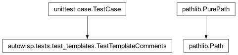
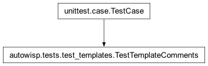

autowisp.tests.test_templates module
Class Inheritance Diagram

Checks over the browser interface’s templates, as plain text.
No Django, no database and no rendering: these read the template files and look for mistakes that Django does not report. That is the whole reason they exist – a template error that raises is found the first time the page is opened, but the ones below fail silently, by putting something on the page that was never meant to be seen.
- class autowisp.tests.test_templates.TestTemplateComments(methodName='runTest')[source]
Bases:
TestCase
Comments have to be written in a form Django actually strips.
- test_no_multiline_hash_comments()[source]
{# ... #}must open and close on one line.Django’s short comment syntax does not span lines: the parser looks for the closing
#}in the same token, so a comment written across several lines is not a comment at all and is rendered to the page as ordinary text. It raises nothing, so it reaches the user rather than the developer – which is exactly what happened, above a banner on the processing progress page.{% comment %} ... {% endcomment %}is the multi-line form.
- autowisp.tests.test_templates._templates = [PosixPath('/opt/anaconda3/lib/python3.12/site-packages/autowisp/browser_interface/configuration/templates/configuration/config_tree.html'), PosixPath('/opt/anaconda3/lib/python3.12/site-packages/autowisp/browser_interface/configuration/templates/configuration/edit_survey.html'), PosixPath('/opt/anaconda3/lib/python3.12/site-packages/autowisp/browser_interface/configuration/templates/configuration/survey_class.html'), PosixPath('/opt/anaconda3/lib/python3.12/site-packages/autowisp/browser_interface/configuration/templates/configuration/survey_class_entries.html'), PosixPath('/opt/anaconda3/lib/python3.12/site-packages/autowisp/browser_interface/configuration/templates/configuration/survey_edit_item.html'), PosixPath('/opt/anaconda3/lib/python3.12/site-packages/autowisp/browser_interface/configuration/templates/configuration/survey_item_access.html'), PosixPath('/opt/anaconda3/lib/python3.12/site-packages/autowisp/browser_interface/configuration/templates/configuration/survey_item_entry.html'), PosixPath('/opt/anaconda3/lib/python3.12/site-packages/autowisp/browser_interface/configuration/templates/configuration/survey_item_noaccess.html'), PosixPath('/opt/anaconda3/lib/python3.12/site-packages/autowisp/browser_interface/core/templates/core/fits_app.html'), PosixPath('/opt/anaconda3/lib/python3.12/site-packages/autowisp/browser_interface/core/templates/core/lcars_app.html'), PosixPath('/opt/anaconda3/lib/python3.12/site-packages/autowisp/browser_interface/core/templates/core/plot_marker.html'), PosixPath('/opt/anaconda3/lib/python3.12/site-packages/autowisp/browser_interface/core/templates/core/walk_fs.html'), PosixPath('/opt/anaconda3/lib/python3.12/site-packages/autowisp/browser_interface/diagnostics/templates/diagnostics/_series_row.html'), PosixPath('/opt/anaconda3/lib/python3.12/site-packages/autowisp/browser_interface/diagnostics/templates/diagnostics/confirm_import.html'), PosixPath('/opt/anaconda3/lib/python3.12/site-packages/autowisp/browser_interface/diagnostics/templates/diagnostics/detrending_diagnostics.html'), PosixPath('/opt/anaconda3/lib/python3.12/site-packages/autowisp/browser_interface/diagnostics/templates/diagnostics/diagnostic_expressions.html'), PosixPath('/opt/anaconda3/lib/python3.12/site-packages/autowisp/browser_interface/diagnostics/templates/diagnostics/diagnostics_app.html'), PosixPath('/opt/anaconda3/lib/python3.12/site-packages/autowisp/browser_interface/diagnostics/templates/diagnostics/preview_calibrated_image.html'), PosixPath('/opt/anaconda3/lib/python3.12/site-packages/autowisp/browser_interface/home/templates/home/confirm_delete.html'), PosixPath('/opt/anaconda3/lib/python3.12/site-packages/autowisp/browser_interface/home/templates/home/create_directory.html'), PosixPath('/opt/anaconda3/lib/python3.12/site-packages/autowisp/browser_interface/home/templates/home/create_project.html'), PosixPath('/opt/anaconda3/lib/python3.12/site-packages/autowisp/browser_interface/home/templates/home/index.html'), PosixPath('/opt/anaconda3/lib/python3.12/site-packages/autowisp/browser_interface/home/templates/home/select_project_home.html'), PosixPath('/opt/anaconda3/lib/python3.12/site-packages/autowisp/browser_interface/processing/templates/processing/error_detail.html'), PosixPath('/opt/anaconda3/lib/python3.12/site-packages/autowisp/browser_interface/processing/templates/processing/error_list.html'), PosixPath('/opt/anaconda3/lib/python3.12/site-packages/autowisp/browser_interface/processing/templates/processing/progress.html'), PosixPath('/opt/anaconda3/lib/python3.12/site-packages/autowisp/browser_interface/processing/templates/processing/review.html'), PosixPath('/opt/anaconda3/lib/python3.12/site-packages/autowisp/browser_interface/processing/templates/processing/review_single.html'), PosixPath('/opt/anaconda3/lib/python3.12/site-packages/autowisp/browser_interface/processing/templates/processing/select_photref_image.html'), PosixPath('/opt/anaconda3/lib/python3.12/site-packages/autowisp/browser_interface/processing/templates/processing/select_photref_target.html'), PosixPath('/opt/anaconda3/lib/python3.12/site-packages/autowisp/browser_interface/processing/templates/processing/select_raw_images.html'), PosixPath('/opt/anaconda3/lib/python3.12/site-packages/autowisp/browser_interface/processing/templates/processing/select_starfind_batch.html'), PosixPath('/opt/anaconda3/lib/python3.12/site-packages/autowisp/browser_interface/processing/templates/processing/tune_starfind.html'), PosixPath('/opt/anaconda3/lib/python3.12/site-packages/autowisp/browser_interface/results/templates/results/curve_config.html'), PosixPath('/opt/anaconda3/lib/python3.12/site-packages/autowisp/browser_interface/results/templates/results/display_lightcurves.html'), PosixPath('/opt/anaconda3/lib/python3.12/site-packages/autowisp/browser_interface/results/templates/results/edit_model.html'), PosixPath('/opt/anaconda3/lib/python3.12/site-packages/autowisp/browser_interface/results/templates/results/param_table.html'), PosixPath('/opt/anaconda3/lib/python3.12/site-packages/autowisp/browser_interface/results/templates/results/rcParams_config.html'), PosixPath('/opt/anaconda3/lib/python3.12/site-packages/autowisp/browser_interface/results/templates/results/subplot_config.html')]
Every template shipped with the browser interface.